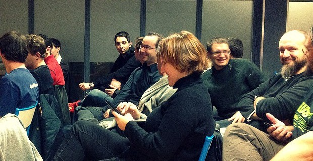

Prochain Toulouse JS
Le prochain ToulouseJS est prévu fin mars 2014.
Pensez à nous suivre sur Twitter
afin d'être tenu au courant du programme.
Et d'ailleurs, le programme c'est vous qui le faites !
Envie de parler ?
Contactez nous sur Twitter ou sur le groupe Google +.
Il suffit de faire une proposition pour avoir son petit créneau tant qu'on parle de JavaScript.
Vous pouvez aussi proposer vos talks aux Aperoweb toulousains sur le Trello board ou sur le repo Github.
Nous faisons notre possible pour organiser souvent cet évènement avec une qualité des présentations et de l'environnement (assez de place, microphone, rétro-projecteur...), cela peut donc prendre plus ou moins de temps et peut aussi varier selon le temps libre des organisateurs.
Toulouse JS #5
Prévu fin mars 2014. N'hésitez pas à nous contactez si vous souhaitez intervenir. Il suffit de demander !
Toulouse JS #4
Petit reprise bien sympathique de l'évenement ToulouseJS histoire de se souhaiter la bonne année juste avant l'extrême limite ! Le soir du 30 janvier 2014, à Epitech Toulouse, nous avons pu assister à 3 talks pour cette remise en jambe.
Browserify all the things
Maxime Thirouin, développeur front-end freelance, nous a présenté Browserify, un outil permettant d'utilise l'API CommonJS pour coder et consommer des modules JavaScript.
Voir les slides de sa présentation ou lire l'article Browserify all the things sur putaindecode.fr.
JV+JS, et pourquoi pas ?
Antoine Rogliano, fondateur de Dreamirl, nous a fait une bonne introduction sur les moyens pour faire des Jeux vidéos dans le navigateurs, via JavaScript.
Voir les slides de sa présentation.
Javascript & Internet des Objets
Younès Benaomar, développeur et designer d'interface, nous a parlé de l'Internet des Objets via JavaScript, avec une petit démo d'un buggy qui filmait la salle en temps réel, visualisable et contrôlable en temps réel via le navigateur.
Voir les slides de sa présentation.
Toulouse JS #3

C'était pas moins d'une centaine de personnes qui se sont réunis le mercredi 23 janvier 2013 à Epitech Toulouse pour la troisième édition du Toulouse JS. Des personnes de tous âges, réunissant des experts aux débutants, avec en prime des développeurs Java membres du Toulouse JUG (que nous saluons au passage).
Web App MVC en production
Hadrien Lanneau, développeur front-end chez Overblog, nous a fait son retour d'expérience sur la mise en production d'une grosse application web MVC côté client.
Voir la vidéo de sa présentation.
Grunt.js (avant/après)
Maxime Thirouin, développeur front-end freelance, nous a présenté Grunt.JS, un puissant outil d'automatisation de tâches en ligne de commande.
Voir les slides de sa présentation.
Au coeur du navigateur
Paul Rouget, développeur chez Mozilla, nous a expliqué comment fonctionne un navigateur internet et précisément le moteur de rendu de Firefox, Gecko.
Des informations précieuses pour tous les développeurs front-end !
Un regroupement de bières
Tout le monde s'est ensuite retrouvé dans un bar à côté d'Epitech pour échanger et boire des litres de bières dans la bonne humeur.
Voir les photos de cette édition
Toulouse JS #2
Quelques mois plus tard la première édition, le Toulouse JS pris place le 28 novembre 2012 à Epitech Toulouse. Cette édition était consacrée aux frameworks front-end.
Soyez ambitieux avec Ember.js
Raphaël Rougeron, véritable expert en développement, nous a présenté Ember.js, un framework pour les applications web ambitieuses.
Réaliser une application moderne avec Backbone.js
Jean Christophe Queval, free-lance et étudiant à Epitech, a fait sa toute première présentation avec Backbone.JS, un framework comme Ember.js, mais avec une API différente.
Un jeu multijoueurs et en temps réel avec Socket.io
Cyrille Bogaert est un développeur web et formateur chez Toxicode. Nous avons vu un jeu multijoueurs en temps réel et pu comprendre son fonctionnement.
Voir ses tutoriaux
Toulouse JS #1
Le 11 avril 2012, c'est la date du premier Toulouse JS. Ce fut un très bon commencement et cet évènement avait réunis une cinquantaine de personnes pour parler du JavaScript.
Le JavaScript aujourd'hui
Sébastien Chopin est blogueur sur Atinux.fr et directeur technique chez Pantera Commerce.
Il a fait le point entre le JavaScript d'avant et celui d'aujourd'hui.
Voir les slides de sa présentation
Vous connaissez Node.js ?
Rémy Loubradou, développeur chez HipSnip, est un des premiers français à avoir utilisé node.js.
Il nous a permis de comprendre le fonctionnement, l'utilisé et l'environnement de node.js.
Voir les slides de sa présentation
Les organisateurs
Sébastien Chopin
Créateur et organisateur du Toulouse JS, j'aime partager ce que j'apprends et apprendre des autres.
J'ai créé cet évènement afin que tous les développeurs de la région Toulousaine puissent faire leur veille JS, mais aussi échanger leurs ressentis et leurs expériences sur divers aspects du JavaScript.
Frank Taillandier
Contributeur à des sites comme Pompage ou Openweb, fondateur des apéroweb Toulouse et de la conférence Sud Web, expert Accessiweb, Frank milite depuis plus de 10 ans pour un web de qualité.
C'est donc tout naturellement qu'il prête main forte à Toulouse JS dès la troisième édition, vu l'importance du langage Javascript dans le web d'aujourd'hui.
Maxime Thirouin
Ayant réalisé sa première application JavaScript sur PDA il y a bien des années, Maxime est un passionné de développement web. Il se focalise sur le développement côté client, réalisant des interfaces avec CSS et en programmant des expériences utilisateurs originales avec la puissance de JavaScript.
Cela ne l'empêche pas de faire du back-end lorsque c'est nécessaire de préférence avec du JavaScript depuis qu'il a découvert Node.js.
Il aime partager tout ce qu'il apprend, que ce soit sur Twitter, en donnant des conférences ou en tant que professeur à l'Université.
Lorsqu'il ne profite pas de la vie simplement, il adore aussi contribuer à l'Open Source via Github.
Raphaël Rougeron
Ivre, il trolle ou code des frameworks...